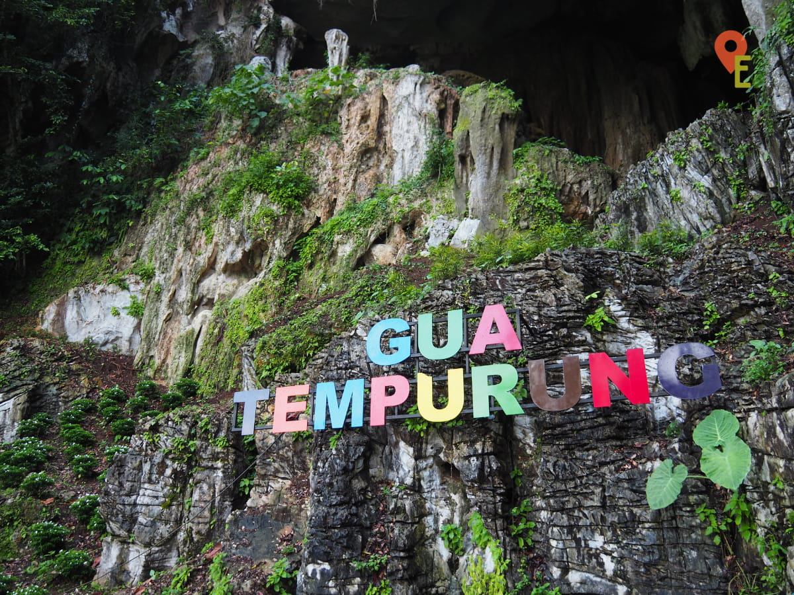
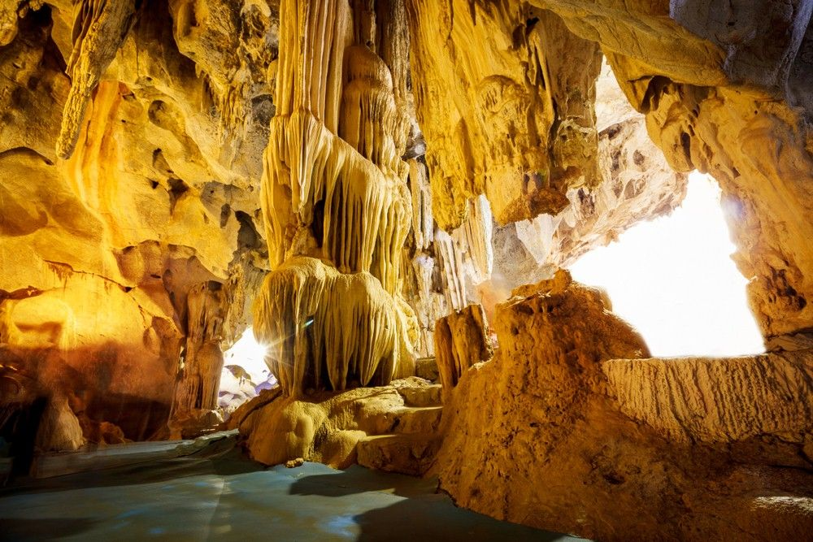
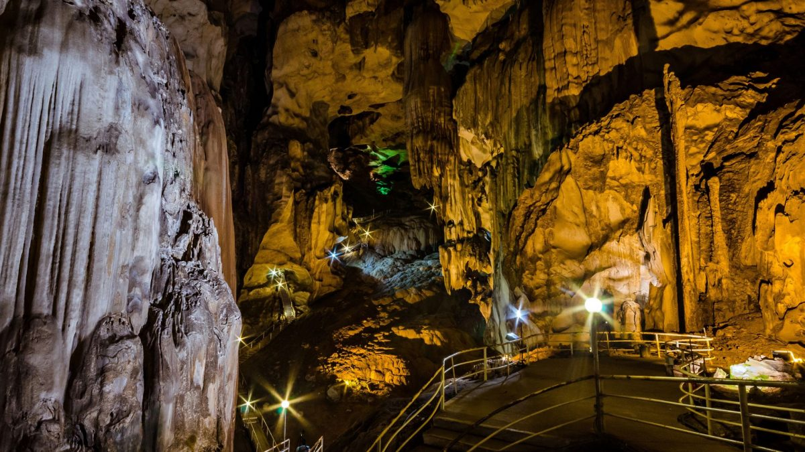
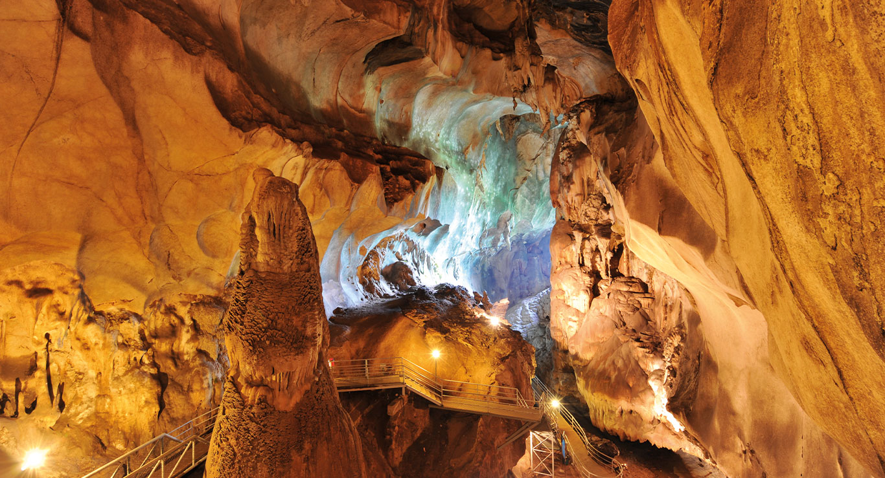

Gua Tempurung: A Majestic Underground Wonder of Malaysia
Gua Tempurung is one of the largest limestone caves in Peninsular Malaysia, located in Perak. It stretches over 4 kilometers and features stunning rock formations, underground rivers, and spacious chambers. Visitors can explore the cave through guided tours that range from easy walks to adventurous river crawls, making it a favorite spot for nature lovers and thrill-seekers.
Gua Tempurung, located near Gopeng in Perak, Malaysia, is one of the country’s largest and most impressive limestone caves. Spanning over four kilometers in length, it features a fascinating network of chambers and tunnels that have formed over millions of years. Its name, which translates to "Coconut Shell Cave," reflects the shape of its domed ceilings. The cave has become a popular destination for tourists and adventure seekers eager to explore its natural beauty and geological formations.
Inside the cave, visitors are treated to a stunning display of stalactites and stalagmites, along with crystal-clear underground streams and dramatic rock formations. The cave is equipped with walkways and lighting in some areas, making it accessible for casual explorers, while also offering challenging spelunking routes for the more adventurous. Each chamber has unique characteristics, including echo chambers and towering ceilings that leave visitors in awe.
Gua Tempurung also holds historical significance, as it was once used as a hideout during political unrest and wartime periods. The cave's cool, mysterious interior and the sound of dripping water create a tranquil yet thrilling experience, offering a stark contrast to the outside world. Guided tours provide insight into the cave’s history and geology, making the visit both educational and exciting.
Whether you're a nature lover, history enthusiast, or thrill-seeker, Gua Tempurung promises a memorable experience. It stands as a symbol of Malaysia’s rich natural heritage, offering a glimpse into the hidden wonders beneath the surface of the earth.
